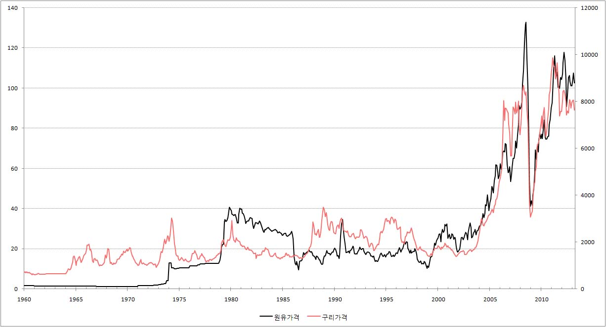

■ 구리가격으로 세계경제의 미래를 예측한다?
세계경제가
호황이면 원유가격이 상승할 가능성이 높고, 세계경제가 불황이면 원유가격이 하락 할 가능성이 높습니다.
따라서 원유가격의 등락만으로 우리는 세계경제가 어떤 상태에 있는지 알 수 있습니다.
하지만 원유가격은 단점이 있습니다. 원유가격은 경제적 요인에 의해서도 움직이지만 중동의 정치적 변화로
인해 폭등하는 경우도 많이 있습니다.
그래서 많은 분들이 원유 가격보다는 구리가격의 변화로 세계경제의 현재와 미래를 점치고 있습니다. 원유를
제치고 구리가 대표선수로 발탁 된 것이 좀 찝찝한 것은 사실입니다. 원자재하면
제일 먼저 원유가 떠오르는 것은 부정 할 수 없는 현실이기 때문입니다. 하지만 구리가 사실 그렇게 호락호락한
놈은 아닙니다.
한번 생각 해 보십시오. 우리가 사용하는 모든 물건에는 구리가 들어가 있습니다. 각종 가전제품은 기본이고,
공장을 지을 때도, 집을 지을 때도 구리가 없으면 우리는 현대문명의 이기를 누릴 수가 없습니다. 구리가
있어야 전기를 들어오고, 그렇게 전기가 들어와야 공장이 돌아가고 집에서 TV를 볼 수 있습니다.
따라서 경제가 좋아져 여기저기 공장이 들어서고 건물이 세워지면, 그리고 사람들이 가전제품을 새로 구입하면,
구리의 수요가 증가하고 그 결과 구리가격이 상승을 하게 됩니다. 그리고 경제가 나빠져 사람들이 쇼핑을
줄이면 구리수요가 줄어들고, 그 결과 구리가격이 하락을 하게 됩니다.
그래서 경제가 좋아질 기미가 보이면 똑똑한 사람들이 미리미리 구리를 확보하기 위해 이러 저리 뛰어 다니게
됩니다. 그리고 이렇게 구리를 사려는 사람이 많아지면서 경제가 좋아지지도 않았지만 일찌감치 구리가격이
상승을 하게 됩니다. 즉 구리가격이 경제보다 한발 빨리 움직이는 것입니다.
하지만 구리의 이런 빠른 발에 회의를 품는 사람도 많습니다. 옛날에는 구리가 빠른 발을 가졌던 것은
사실이지만, 지금은 옛날처럼 구리가 빠른 발을 가지고 있지 않다는 이야기입니다. 이런 이야기에 설득력을
실어주는 것이 아래의 그래프 입니다. 그래프를 보면 구리가격이 과거에는 원유가격보다 빠른 움직임을 보였지만
지금은 그렇게 않다는 것을 어렴풋이 알 수 있습니다.

{kind=link}